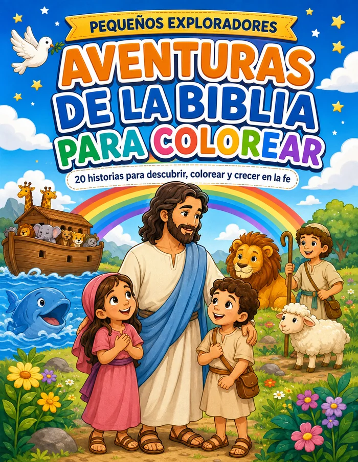
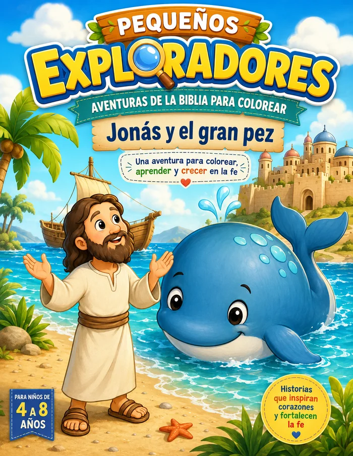

Aventuras de la Biblia para Colorear
20 aventuras bíblicas para leer, colorear y descubrir en familia. Incluye actividades, pósteres y certificado en un PDF listo para imprimir.
Pequeños Exploradores
Cuadernos de actividades y colorear con aventuras bíblicas para niños, creados y publicados de forma independiente en Amazon KDP y Hotmart.

20 aventuras bíblicas para leer, colorear y descubrir en familia. Incluye actividades, pósteres y certificado en un PDF listo para imprimir.

La historia bíblica de Jonás con páginas para colorear, actividades imprimibles, diploma y medalla. Para niños de 4 a 8 años.